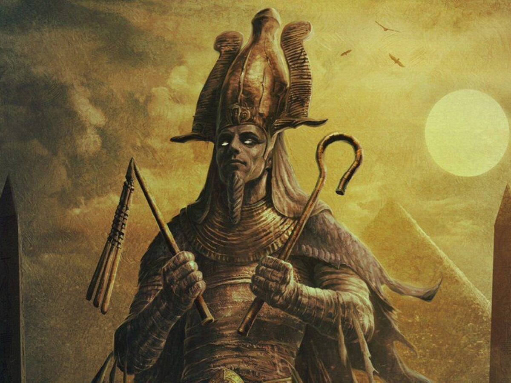
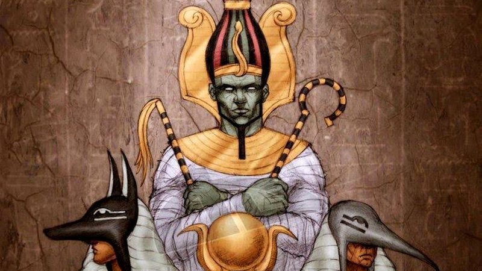

História
Acredita-se que o culto a Osíris, se iniciou em algum momento do período Pré-Dinástico e se tornou popular no período Dinástico, influenciando na religiosidade egípcia que estava implantada até o período da Dinastia Ptolomaica. Osíris foi uma importante divindade da mitologia e da religiosidade dos egípcios na Idade Antiga. Surgiu como um deus da fertilidade, mas se transformou no deus dos mortos, sendo o senhor da vida após a morte e o responsável por julgar os mortos por suas ações em vida.
Simbologia
Também chamado de Usir ou Ausar, Osíris está relacionado com a vida no além pois a ele foi atribuído o trabalho de julgar os mortos. Para isso, pesava o coração de cada um, sendo assim o que tiver o coração mais pesado, por conta dos pecados que cometeu em vida, não receberá um destino tão bom quanto ao da pessoa com o coração mais leve. Esse processo era chamado de "psicostasia" e acontecia na "sala das duas verdades". Assim, com o resultado obtido, ele decidia o destino das pessoas. Ele também é cultuado como deus da agricultura porque esse processo também implica na morte e renascimento da vida. Após a colheita, os campos experimentam o vazio, até que sejam semeados para produzir novamente. Osíris, portanto, simboliza o renascimento, a ressurreição, a justiça e a fertilidade.
Morte de Osíris
Osíris foi o líder do antigo Egito, enquanto seu irmão Set governava o deserto. No entanto, Set começou a sentir inveja de Osíris e armou uma trama para matá-lo. Existem diferentes versões sobre como Set realizou esse plano, algumas dizem que ele se transformou em um animal selvagem, outras que o jogou no rio Nilo depois de armar uma armadilha. A esposa de Osíris, Ísis, embarcou em uma busca para encontrar todas as partes do corpo de Osíris, que Set havia espalhado pelo Egito, com exceção de uma parte importante. Ela conseguiu reunir todas as partes, exceto uma que correspondia ao pênis de Osíris. Quando Ísis reuniu as partes, Osíris renasceu e Ísis ficou grávida de Hórus, graças a um gesto simbólico de Osíris. Como uma parte de seu corpo estava faltando, Osíris não pôde mais governar os vivos, mas se tornou o senhor do mundo após a morte e passou a julgar os mortos. Tudo isso é um tanto estranho, mas faz parte das antigas histórias egípcias.
.png)